Tests of the potential-field schemes
Report On Noddy Computational Comparisons
by
Hungerford Geophysical Consultants and
Mark Jessell, Monash University
Introduction
Methodology
Cube
Sphere
Vertical Prism
Thin Sheet
Vertical Fault
Horizontal Cylinder
Horizontal Syncline
Conclusions
Differences with other modelling schemes
At the request of AMIRA, Hungerford Geophysical Consultants (HGC) were requested to carry out some comparative computer modelling to test the output from the Noddy potential field modelling software, following these tests modifications were made to the software to fix some problems with positioning, and the Noddy models were modified to make the boundary conditions the same for all models. The results of these modified tests are described here.
The other modelling packages used were MODELVISION (Encom Technology Pty Ltd), MagMap3d (provided by Steve Mudge, RGC), MAG3D (a proprietary package developed by the University of British Columbia, and used at Riotinto Exploration) and various analytical solutions coded by Mark Jessell. One or two initial tests using MAGMOD (Geosoft Inc) indicated that their results were the same as ModelVision's.
The responses of the following bodies were calculated:
1. Cube (Magnetics)
2. Sphere (Gravity & Magnetics)
3. Vertical Thin Prism (Gravity & Magnetics)
4. Horizontal Thin Sheet (Faulted) (Magnetics)
5. Vertical Fault (Magnetics)
6. Horizontal Cylinder (Magnetics)
7. Horizontal Syncline (Magnetics)
In each case, a Noddy Block of 5000 x 5000 x 5000 metres was used in which to place the body, with a cell size of 200 metres. Each body had a maximum horizontal dimension (i.e. strike length) of 5000 metres. The calculations were done at a flight height (observation level) of 400 metres above surface. The Noddy default magnetic field was used (63000nT, I = -67, D = 0), with cgs susceptibility units unless otherwise noted.
A north-south profile across the centre of the body was used for comparison between the different calculation methods, except for the Sphere model as noted. Background susceptibility and density = 0, with respective body properties of 0.01 cgs and 0.3 gm/cc, except for the sphere model as noted.
Although the cell size of 200 metres may seem large, this was necessary in order to allow for reasonable computation times, especially for the Full Spatial Calculation (which took, for instance, 45 mins to calculate for the Fault model). A Pentium PC clone was used for all calculations.
For each model, calculations in Noddy were carried out using all 3 computation schemes: Spatial Convolution, Full Convolution and Spectral. The Spatial Calculations used only the default Ramp for spectral padding (except for the Fault model that also used Reflection spectral padding).
Once all the calculations were carried out for each body, the results were imported into an Excel spread sheet in order to plot the profiles. Two operations were required at this stage. Since the Noddy output results are in the form of a 2D (plan) set of values for each 200 metre cell, the central line used for the profile needed to be reversed to match the ModelVision output line (which increases from south to north). In addition the MAG3D results needed to be multiplied by 4p to compensate for the susceptibility units used (cgs in Noddy, SI in MAG3D), and corrections for self-demagnetisation were needed to compare MagMap3D results.
Once all the results were in Excel, they were plotted as profiles, and these are attached to this report. Also plotted were the relevant ModelVision sections and plans in order to help visualise the models.
Discussion Of Results
For each model there will be a set of graphs comparing the results of the different calculations,
(Side of cube = 200 m, depth to top of cube = 80 m, survey NS 200m intervals, over centre of cube).
This model was calculated using Noddy and Mag3D using a block model file exported from Noddy.
The Full Spatial model produces essentially identical results to the MAG3D calculations.
Figures:
- Comparison of Noddy and MAG3D results for cube. (magnetics).
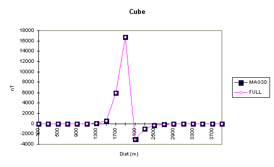
(Radius = 1000 m, depth to centre = 3000 m, survey traverse 4900 to -4900 m N at -100 n East of centre of sphere, 200 sample spacing)
A number of tests were made in comparison to the MagMap3D code, which uses the Emerson, Clark & Saul (Exploration Geophysics 16, 1985) formula for the analytical expression of a sphere.
Two corrections to the Noddy results had to be made to account for differences in the models:
- The MagMap3D code assumes self-demagnetisation of the sphere, so the Noddy model used susceptibilities normalised by k' = k/(1+4/3.p.k).
- The Noddy sphere was made up of 552 cubes, each 200 m on a side, which makes a volume of 4,416,000,000 m3 whereas a 1000 m sphere should have a volume of 4/3.pi.10003 making a volume of 4,188,790,205 m3. The Noddy results take into account this difference in volume by normalising the field strengths by the ratio of the volumes.
Five different models were calculated
- Earth Field Declination =0, Remanence of sphere =0, Isotropic susceptibility
- Earth Field Declination =80.3, Remanence of sphere =0, Isotropic susceptibility
- Earth Field Declination =0, Remanence of sphere =6300, Isotropic susceptibility (Remanent declination = 65.4, Inclination = 34.5)
- Earth Field Declination =80.3, Remanence of sphere =6300, Isotropic susceptibility (Remanent declination = 65.4, Inclination = 34.5)
- Earth Field Declination =0, Remanence of sphere =0, Anisotropic susceptibility (kx=0.1; ky=0.2; kz=0.3)
After corrections were applied as discussed, the Noddy calculations produce essentially identical results to the analytical solutions provided by.
Figures:
- Comparisons of Noddy and MagMap3D results for sphere (magnetics).
- Comparisons of Noddy Full Spatial and MagMap3D results for sphere with declination (magnetics).
- Comparisons of Noddy and MagMap3D results for sphere with remanence (magnetics).
- Comparisons of Noddy and MagMap3D results for sphere with declination and remanence (magnetics).
- Comparisons of Noddy and MagMap3D results for sphere with anisotropic susceptibility (magnetics).
- Comparisons of Noddy and ModelVision results for sphere (gravity).
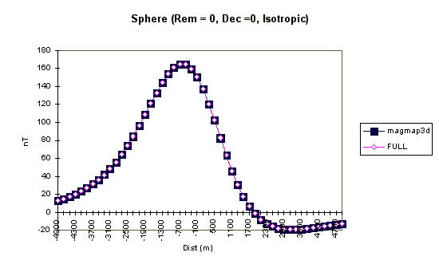
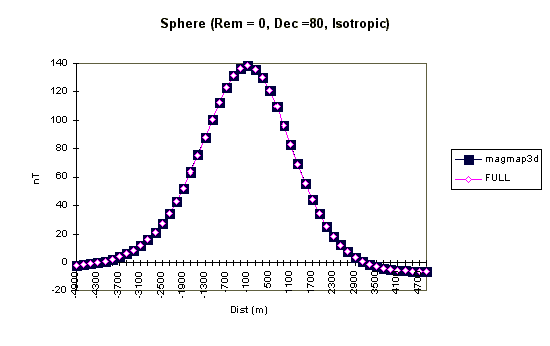
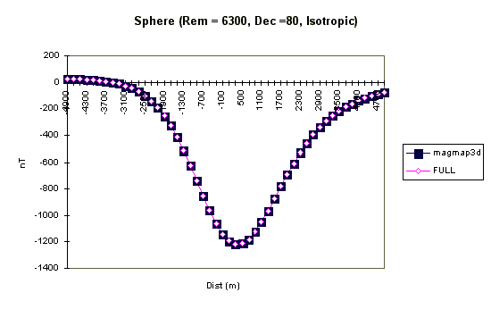
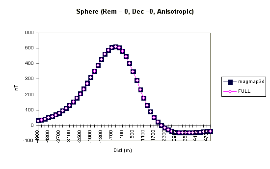
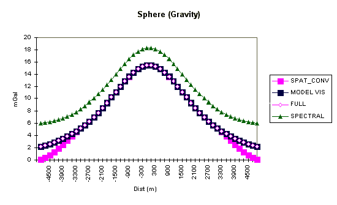
(Dip 900, West-East Strike, Position at 2500N, Depth Extent = 5000m)
All the magnetic calculations agree very well, although the Spectral calculation is offset by a level shift.
The first Vertical Derivative was plotted for both ModelVision and Noddy output, but there is a problem since the latter gives amplitudes about 200 times higher than ModelVision output. The 1st VD of the ModelVision output was calculated using GEOSOFT's FFT routine (in OASIS Montaj), and this agreed with the Noddy output. Presumably the difference occurs due to the different ways in which the Vertical Derivatives are calculated (Convolution in ModelVision, FFT in Noddy and Geosoft).
The Full Spatial model produces essentially identical results to the MAG3D calculations.
Figures:
- Comparison of Noddy, ModelVision and MAG3D results for a vertical prism (magnetics).
- First Vertical derivative calculations for vertical prism magnetics data using ModelVision, Noddy and GEOSOFT.
- Comparison of Noddy, ModelVision and MAG3D results for a vertical prism (gravity).
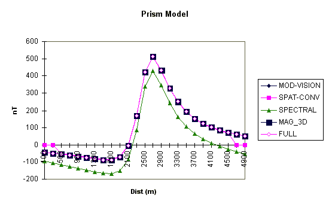
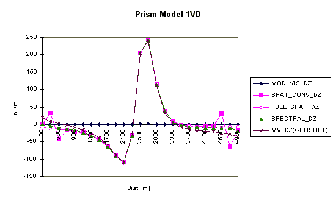
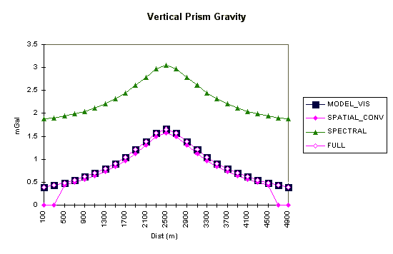
(West-East strike, centre along 2500N, depth to centre 1900m, strike length = 5000m, radius = 750m)
One correction to the Noddy results had to be made to account for differences in the models:
- The Noddy cylinder in section was made up of 45 cubes, each 200 m on a side, which makes an area of 1800000 m2 whereas a 750 m radius circle should have an area of p.7502 making an area of 1767146 m3. The Noddy results take into account this difference in area by normalising the field strengths by the ratio of the area.
The magnetic calculations all agree well, albeit with some level shifts particularly of the Spectral Calculation. As for the Prism model there is difference in response amplitude with the Spectral gravity calculation.
Whilst calculating the Noddy models it became apparent that the Full Spatial and Mag3D calculations did not give west-east symmetrical responses, whereas the Spatial Convolution, ModelVision and Spectral calculations did. Each calculation scheme is actually modelling a slightly different boundary condition. The Full Spatial and Mag3D calculations are for a truncated cylinder model, so the anomalies decay towards the end of the cylinder, as is expected. The Spatial Convolution model has a limited calculation range, but adds this range on to the end of the block so edge values are treated exactly like central ones, so the model is EW symmetric. The Spectral Model has Ramp padding, so the calculation is actually for an infinite cylinder. Finally the ModelVision model is actually an infinite cylinder as well, even though you define a limited strike extent for the cylinder.
The Full Spatial model produces essentially identical results to the MAG3D calculations.
Figures:
- Comparison of Noddy, ModelVision and MAG3D results for a horizontal cylinder (magnetics).
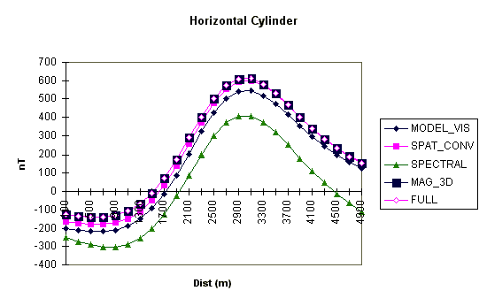
(Depth to top surface = 400m, lateral extent 5000 x 5000m, strike west-east, edge at 2500N)
The Noddy model was set up as a horizontal dyke with a vertical thickness of 200 metres (i.e. 1 cell thick). It was then faulted along 2500N with a throw (slip) of 10000m, down to the north.
The Noddy Spatial and ModelVision results agree quite well, but the Spectral and MAG3D results are very different at the edges of the Noddy Block. This is rather surprising since the model was set up to extend to 2500 metres west of the origin of the profile (i.e. west of the edge of the block which itself had zero susceptibility). Again the differences that arise are mainly due to boundary conditions, as the sheet actually extends beyond the edge of the model with the Spatial Convolution model, but is sharply truncated in the Spectral, MAG3D and Full Spatial Models.
The Full Spatial model produces essentially identical results to the MAG3D calculations.
Figures:
- Comparison of Noddy, ModelVision and MAG3D results for a thin horizontal sheet (magnetics).
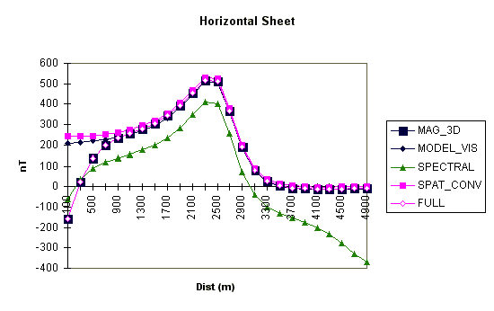
(Vertical edge, top depth = 400m, west-east strike along 2500N)
This was set up in Noddy as a thick horizontal dyke, faulted along 2500N, with dimensions of 5000 x 5000 x 5000m (ie similar to the thin horizontal sheet but much thicker in the vertical dimension).
As for the thin horizontal sheet, the Full Spatial, MAG3D and Noddy Spectral calculations are different from the others. In order to test the effect of the Ramp spectral padding, the Spectral calculation was also done using a simple reflection padding which produced a much better (i.e. more comparable) result, because the Reflective padding extends the high susceptibility block another 2500 m, whereas the Ramp padding ramps down to zero at the boundary. The Full Spatial and MAG3D models assume that the high susceptibility block is truncated at the edge of the model.
The Full Spatial model produces essentially identical results to the MAG3D calculations.
Figures:
- Comparison of Noddy, ModelVision and MAG3D results for a fault (magnetics).
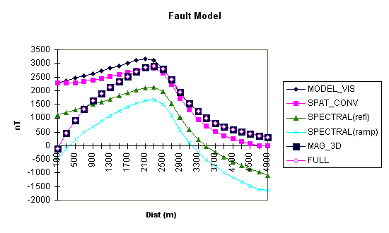
(West-east strike with 5000 metre extent, height to top of each limb = 400m, half-wavelength in north direction = 2000m)
A somewhat more complex model was attempted that could also be set up in ModelVision. The Noddy model took a basic 3 layered stratigraphy (centre layer 500 metres thick) and folded it along a west-east axis. A single fold with a nominal 2000 metre wavelength and 2000m amplitude was imposed on the block with the actual fold shape set up in the fold-profile window. The coordinates used to set up the ModelVision polygonal model in cross-section were taken from the Noddy cross-section in the Geology/Block option. The Noddy section is much more blocky than the ModelVision one, since the latter has cube sizes of 200 metres. In order to test the effect of a smaller, cube size calculations were also done with 100m cube size, and a block thickness of 2500 rather than 5000 metres (to decrease computing time).
All the results are reasonably comparable, - the Spatial calculation having a level shift but otherwise similar shape. The ModelVision profiles are slightly different but this is attributable to slightly different body shapes. However the Noddy calculations do give different results with different cell sizes. This might be expected but they are different relative to the same ModelVision profile (see the relative amplitudes for each limb).
The Full Spatial model produces essentially identical results to the MAG3D calculations.
Figures:
- Comparison of Noddy, ModelVision and MAG3D results for a horizontal syncline (magnetics, using 200 m cubes).
- Comparison of Noddy, ModelVision and MAG3D results for a horizontal syncline (magnetics, using 100 m cubes).
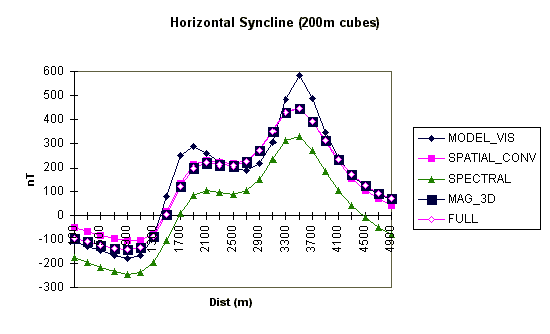
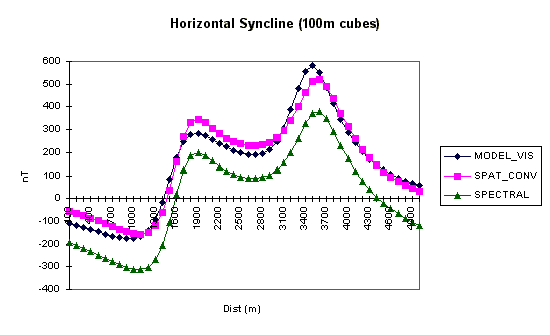
1. For all models tested, the Full Spatial model produces essentially identical results to the MAG3D calculations. In the graphs below the solid squares are the MAG3D results, and the hollow diamonds are the Noddy Full Spatial calculation results for the same models.
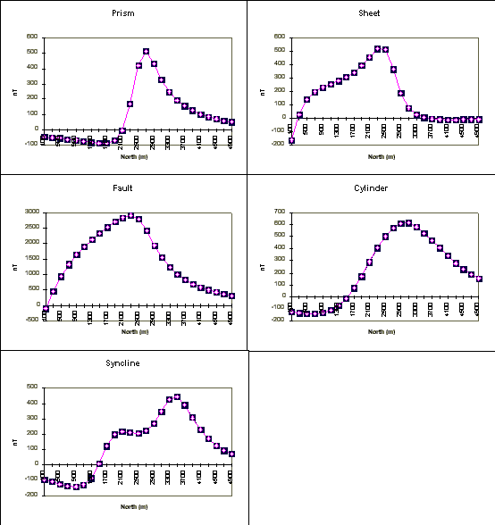
2. For those models that are very extensive in the strike and depth direction only, but with limited horizontal extent, there seems to be reasonable comparison between the various computation methods used, including remanence, anisotropy and declination effects.
3. Where the body extends laterally and horizontally beyond the edges of the Noddy block (as for a Faulted Block and Thin Horizontal Sheet) the Spatial Convolution, Spectral and MAG3D results produce results that vary significantly from the semi-infinite analytical solutions, however they do model the bodies actually described by Noddy.
4. The Spectral calculations produce results with uniform offsets from the Full Spatial models, however the far field behaviour can be quite different as the boundary conditions vary. In the graphs below the solid squares are either Model-Vision or Noddy Full Spatial or results (Noddy Full Spatial for those cases where the two systems assume different far field behaviour), and the hollow diamonds are the Noddy Spectral calculation results (with arbitrary offsets applied) for the same models.
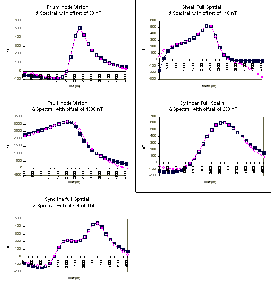
5. The different calculation schemes for the gravity calculations all produced very similar results, as long as large block dimensions were specified for the spectral scheme, and large range values were used for the spatial convolution scheme. The gravity fields (because of their slower decay with distance) are more prone to errors when these two conditions are not met. As with the magnetic calculations, the most robust calculations were performed using the full spatial scheme.
6. For some models, such as a sphere, the difference in volume between analytical and Noddy models needs to be taken into account in order to get precisely the same results.
Reconciling Differences with other Modelling Packages
There are a number of differences in the underlying assumptions of the different modelling schemes in Noddy which need to be take into account when comparing the results of potential-field calculations both within Noddy and against other modelling schemes.
1) Differences due to cube based modelling
All of the modelling schemes rely on cube (voxel) model of the geology. This can lead to three differences when modelling even a simple object such as a sphere:
- Volume Differences. Whereas the true volume of a 1000 m radius sphere (pi.4/3.10003= 4,188,790,205 m3) the same sphere modelled by 552 times 200 m cubes (552.200.200.200= 4,416,000,000 m3, so that the anomaly calculated in Noddy will be approximately 5% larger than an analytical solution. This problem reduces significantly when a small enough small cube size is used.
- Positional Shifts. If a coarse cube model is used, there may be a shift in body location, for example if a 100 wide dyke is modelled using 150 m width cubes, the center of the dyke will be the center of the 150 m cubes, not the actual dyke center. This problem reduces significantly when a small enough small cube size is used.
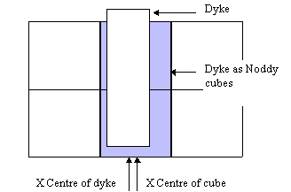
- Near surface variations in geometry. When deeply buried, the change in body geometry of a sphere modelled as a set of cubes has virtually no impact on anomaly shape, however if the top of the sphere is very near the surface, the map view geometry of the topmost cubes can show up in the anomaly. In the pictures below the gravity fields are calculated for a sphere with a top to sphere of 2000m (left) and 80 m (right). These problems can be alleviated by using a calculation that has two different cube sizes for shallow and deep geology (using the Variable Cube Size with Depth option in the Geophysics Calculation Options window). This problem in any case reduces significantly when a small enough small cube size is used.
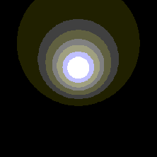
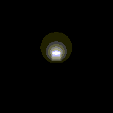
Sphere at 2000 m Sphere at 80 m
2) Differences due to boundary conditions
This is perhaps the most difficult consideration to unravel when comparing modelling schemes, and requires the most care when models are set up. Many analytical schemes assume infinite or semi-infinite body geometries, which cannot be accurately modelled in Noddy (but don't occur in nature either). Also the different schemes within Noddy will inherently assume different boundary conditions, with the Spectral code inherently assuming a repeating set of models, and the amount of extra geology as padding around the boundaries of the spatial techniques depending on the Range term.
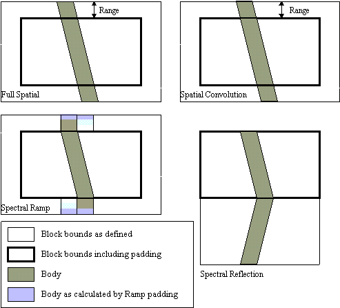
In the figure below, the effect of increasing the block dimensions from 10k (SPECRAL) to 30k (BIG SPECTRAL) are shown for a Spectral Gravity calculation, using Ramp padding. The larger block dimensions significantly alter the absolute magnitude of the anomaly, and change its shape near the boundaries.
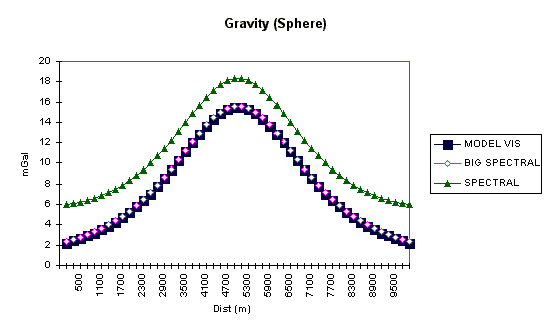
The accuracy of the calculation from a single body to the distance chosen is limited to the value of the Range term in the Spatial Convolution Options Window. If multiple bodies are present in a model the effects may not be so obvious. In the figure below the effect of progressively increasing the range from 1000m to 6000m is shown.
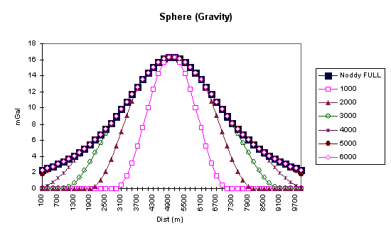
The Spectral calculations involve an inherent loss of the absolute offset of field strengths, so comparisons with the Spatial code result in a uniform offset between the two schemes. When comparing Spectral calculations with field data this will not be a problem as a regional is removed. The example below also shows a variation in response towards the edges due to the differing boundary conditions of the two calculation schemes.

Some calculation schemes take into account self-demagnetisation, in order to do this in Noddy, adjust susceptibilities used by applying the following formula:
k' = k/(1+4/3.p.k)
6) Differences due to field calculation type
Two conventions are currently in use in magnetic modelling systems: namely field strengths projected onto the inducing field, and measured field strengths (see Emerson, Clark & Saul, Exploration Geophysics 16, 1985, for discussion). Noddy supports both methods, but care has to be taken to ensure the same method is applied.
7) Differences in High frequency signal for Spectral Calculations
The Spectral calculations involve an inherent loss of the high frequency information, so comparisons with the Spatial code result in spike in the signal near large contrasts in rock properties. The image below shows the arithmetic difference between a full spatial calculation and a spectral calculation of a fold-tilt-fault history. This image shows the largest differences are at the boundaries of the model, however it also shows a high frequency pulse around the margins of the high susceptibility unit.
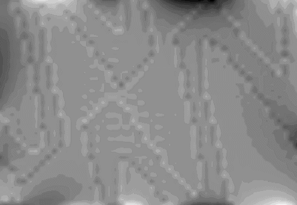
Noddy · open source under the MIT licence · Loop3D/noddy_qt